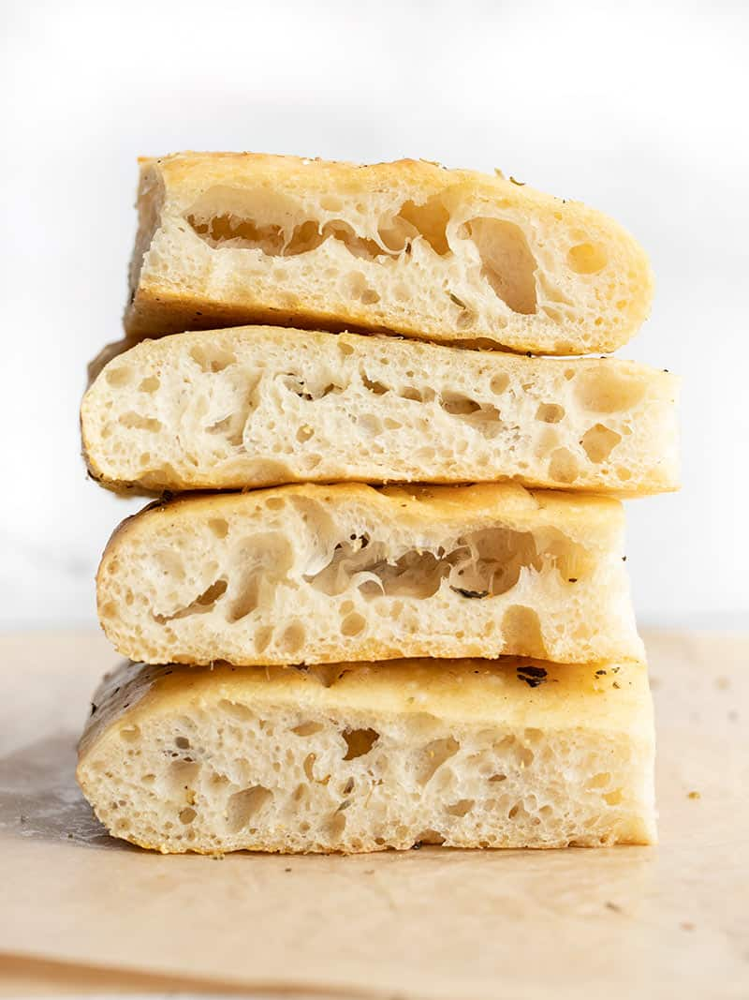

Easy No-Knead Homemade Focaccia

What it is?
Focaccia is a (relatively) thin Italian bread that is characterized by its fluffy inside and tender thin crust. Before baking it is thoroughly covered in olive oil and then dipples are pressed into the dough to release gas and infuse the olive oil. Depending on what region you are in it might be topped with salt, herbs, vegetables, or even cheese.
Ingredients
- 4 cups all-purpose flour ($0.61)
- 1/4 tsp instant yeast ($0.02)
- 1 1/2 tsp salt ($0.03)
- 2 cups water ($0.00)
- 2 Tbsp olive oil, divided ($0.32)
- 2 Tbsp cornmeal ($0.03)
- 1 Tbsp Italian seasoning ($0.30)
Steps
- The night before, combine the flour, salt and yeast in a bowl. Stir until everything is evenly combined. Add the water and stir until it forms one cohesive, sticky, shaggy ball of dough with no dry flour left on the bottom of the bowl. If there is still dry flour in bowl, add a little water (1-2 Tbsp) until the dough comes together (scroll down to the step by step photos for examples). Loosely cover the bowl and let sit at room temperature for 12-18 hours.
- The next day the dough will be wet, bubbly, and very fluffy. Dust the top of the dough with some flour, then scrape the dough from the sides of the bowl. Turn the dough over on itself a few times until it forms a ball in the center of the bowl.
- Line a baking sheet with foil then drizzle with 1 Tbsp olive oil. Spread the oil to coat the surface of the foil, then sprinkle cornmeal on top of the oil.
- Transfer the dough to the baking sheet. Stretch and pat the dough out into a large rectangle. You may need to dust your hands with flour throughout this process to keep the dough from sticking.
- Drizzle olive oil over the surface of the dough and use a soft brush to spread it evenly over the surface. Sprinkle the Italian seasoning (or any type of herbs) over top. Let the dough rise for another hour.
- Preheat the oven to 425ºF. Using your fingers, press dimples into the risen dough. Bake the focaccia for 20-25 minutes in the preheated oven or until the surface is golden brown. After removing from the oven, allow the focaccia to cool before slicing and serving.